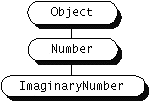

Feedback Form
|
|
Start of Tutorial > Start of Trail > Start of Lesson |
Search
Feedback Form |
A method's declaration provides a lot of information about the method to the compiler, to the runtime system, and to other classes and objects. Included is not only the name of the method, but also such information as the return type of the method, the number and type of the arguments required by the method, and which other classes and objects can call the method.While this may sound like writing a novel rather than simply declaring a method, most method attributes can be declared implicitly. The only required elements of a method declaration are the method's name, its return type, and a pair of parentheses ( ). This figure shows the elements of a method declaration.
Each element of a method declaration is further defined below:
- accessLevel
- As with member variables, you control which other classes have access to a method using one of four access levels: public, protected, package, and private. Controlling Access to Members of a Class covers access levels in detail.
static- As with member variables,
staticdeclares this method as a class method rather than an instance method. Understanding Instance and Class Members talks about declaring instance and class methods.abstract- An abstract method has no implementation and must be a member of an abstract class. Refer to Writing Abstract Classes and Methods
for information about why you might want to write an abstract method and how such methods affect subclasses.
final- A final method cannot be overridden by subclasses. Writing Final Classes and Methods
finalmethods, how they affect subclasses, and whether you might want to write afinalclass instead.native- If you have a significant library of functions written in another language such as C, you may wish to preserve that investment and use those functions from Java. Methods implemented in a language other than Java are called native methods and are declared as such using the native keyword. Check out our Java Native Interface
synchronized- Concurrently running threads often invoke methods that operate on the same data. These methods may be declared synchronized to ensure that the threads access information in a thread-safe manner. Synchronizing method calls is covered in Doing Two or More Tasks At Once: Threads
- returnType
- Java requires that a method declare the data type of the value that it returns. If your method does not return a value, use the keyword
voidfor the return type. Returning a Value from a Method talks about the issues related to returning values from a method.- methodName
- A method name can be any legal Java identifier. You need to consider several issues in regards to Java method names. These are covered in Method Names.
( paramlist )- You pass information into a method through its arguments. See the next section, Passing Information into a Method.
[throws exceptions]- If your method throws any checked exceptions, your method declaration must indicate the type of those exceptions. See Handling Errors with Exceptions
You declare a method's return type in its method declaration. Within the body of the method, you use thereturnoperator to return the value. Any method that is not declaredvoidmust contain areturnstatement. TheStackclass declares theisEmptymethod, which returns aboolean:The data type of the return value must match the method's return type; you can't return anpublic boolean isEmpty() { if (items.size() == 0) return true; else return false; }Objecttype from a method declared to return an integer. TheisEmptymethod returns either the boolean valuetrueorfalse, depending on the outcome of a test. A compiler error results if you try to write a method in which the return value doesn't match the return type.The
isEmptymethod returns a primitive type. Methods also can return a reference type. For example,Stackdeclares thepopmethod that returns theObjectreference type:When a method returns an object such aspublic synchronized Object pop() { int len = items.size(); Object obj = null; if (len == 0) throw new EmptyStackException(); obj = items.elementAt(len - 1); items.removeElementAt(len - 1); return obj; }popdoes, the class of the returned object must be either a subclass of or the exact class of the return type. This can be a source of confusion, so let's look at this more closely. Suppose you have a class hierarchy whereImaginaryNumberis a subclass ofjava.lang.Number, which is, in turn, a subclass ofObject, as illustrated here: Now suppose you have a method declared to return aNumber:Thepublic Number returnANumber() { . . . }returnANumbermethod can return anImaginaryNumberbut not anObject.ImaginaryNumber"is a"Numberbecause it's a subclass ofNumber. However, anObjectis not necessarily aNumber--it could be aStringor some other type. You also can use interface names as return types. In this case, the object returned must implement the specified interface.
Java supports method name overloading so that multiple methods can share the same name. For example, suppose you are writing a class that can render various types of data (strings, integers, and so on) to its drawing area. You need to write a method that knows how to render each data type. In other languages, you have to think of a new name for each method, for example,drawString,drawInteger,drawFloat, and so on. In Java, you can use the same name for all of the drawing methods but pass a different type of parameter to each method. So, in your data rendering class, you can declare three methods named draw, each of which takes a different type of parameter:Overloaded methods are differentiated by the number and type of the arguments passed into the method. In the code sample,class DataRenderer { void draw(String s) { . . . } void draw(int i) { . . . } void draw(float f) { . . . } }draw(String s)anddraw(int i)are distinct and unique methods because they require different argument types. You cannot declare more than one method with the same name and the same number and type of arguments because the compiler cannot differentiate them. So,draw(String s)anddraw(String t)are identical and result in a compiler error.A class may override a method in its superclass. The overriding method must have the same name, return type, and parameter list as the method it overrides. Overriding Methods
|
|
Start of Tutorial > Start of Trail > Start of Lesson |
Search
Feedback Form |